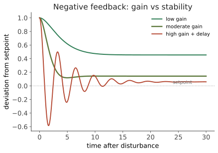

人体 I · 稳态作为控制系统
证据地位：【实】——生理机制与控制论描述都是稳定知识。 生理学教科书通常这样讲："负反馈维持内环境稳定"。这句话对，但太软。本页把它硬化：稳态是一个可以写出方程、算出增益、预测失稳的控制系统。用控制论的眼光看生理学，散落的调节机制会立刻组织成同一套语言，而"疾病"往往就是这套系统的某个环节被破坏。
一、稳态的基本回路
内环境（细胞外液）的温度、pH、渗透压、血糖、氧分压必须维持在窄范围内，因为酶活性对这些参数极敏感（线一：蛋白结构依赖环境）。维持它们靠负反馈：
这就是一个标准的闭环控制器。控制论的词汇可以逐条对应：设定点（setpoint）、误差信号、增益（gain）、响应时滞（delay）、扰动（disturbance）。
增益决定纠正得多彻底。若开环时扰动使变量偏离 \(\Delta_{\text{open}}\)，闭环后残余偏离为
\(G\) 是回路增益。\(G\) 越大，控制越紧。人体各系统增益差别很大：体温调节的增益相当高（核心温度日变化通常在 1 °C 内），而体重调节的增益就低得多——这也是为什么减重如此困难，身体会主动抵抗偏离，但抵抗得并不精确。
二、为什么高增益也危险：延迟与振荡
控制论给出的第一个非平凡教训是：增益不是越大越好。若回路存在时滞 \(\tau\)，高增益会导致过冲与振荡，甚至失稳。

这个权衡在生理学里到处可见：呼吸调节中，若化学感受器反馈过强加上循环时间延长（如心衰患者），可出现周期性呼吸（Cheyne–Stokes）——呼吸深浅周期性起伏，本质上就是控制回路的振荡。把病理现象读成控制系统的失稳，是本页最有用的视角。
三、级联控制：内分泌轴
人体的许多调节不是单回路，而是级联的三级结构，以下丘脑–垂体–靶腺轴为典型：
例如 HPA 轴：CRH → ACTH → 皮质醇，皮质醇反过来抑制下丘脑与垂体。类似的还有 HPT 轴（甲状腺）、HPG 轴（性腺）。
为什么要级联？ 至少三个好处：信号放大（一个下丘脑神经元的输出可被逐级放大数个数量级）、多点整合（每一级都能接收其他输入，如应激、昼夜节律、营养状态）、动态范围扩展。代价是响应更慢、环节更多——任何一级出问题都会致病，而临床上正是靠测量不同层级的激素来定位病变位置（例如低甲状腺素配合高 TSH 指向甲状腺本身，配合低 TSH 则指向垂体）。
四、血糖：一个双向控制系统
血糖调节值得细看，因为它是双向的（既能升也能降），且它的失调是全球最常见的慢性病之一。
- 升高时：β 细胞分泌胰岛素 → 促进组织摄取葡萄糖、肝糖原合成、脂肪合成 → 血糖下降。
- 降低时：α 细胞分泌胰高血糖素 → 肝糖原分解、糖异生 → 血糖上升。还有肾上腺素、皮质醇、生长激素等多重升糖机制。
注意不对称性：降糖只有胰岛素一条通路，升糖却有多条冗余通路。这不是设计失误，是演化逻辑——低血糖在几分钟内致命，高血糖要几十年才致病。演化对前者的选择压远大于后者（线四会正式讨论这类权衡）。这个不对称直接解释了为什么糖尿病如此常见而"低血糖症"作为慢性病罕见。
病理生理（提醒：本课不涉及诊疗）：1 型是自身免疫破坏 β 细胞导致胰岛素缺乏（线二第四页会讲自身免疫）；2 型的核心是胰岛素抵抗——效应器对信号的敏感性下降，等价于控制回路的增益降低。身体的代偿是提高胰岛素分泌（提高信号强度），久之 β 细胞衰竭，于是失控。用控制论读：这是一个增益逐渐丧失、代偿最终耗竭的系统。
五、体温与渗透压：两个对照
体温：下丘脑视前区是整合中枢。散热靠皮肤血管舒张、出汗（蒸发是高效散热，每克汗约带走 2.4 kJ）；产热靠寒战、褐色脂肪的非寒战产热（解偶联蛋白 UCP1 让质子绕过 ATP 合酶直接回流，能量全部变热——正是线一化学渗透机制的一个巧妙"短路"）。
发热不是失控，而是设定点被上调：病原体相关分子诱导前列腺素 E₂ 作用于下丘脑，把目标温度调高。这就是为什么发热初期会感到冷、会寒战——身体在按新设定点努力升温。理解这一点才知道发热与中暑本质不同：前者是设定点改变（受控的），后者是散热能力被压垮（失控的）。
渗透压：由下丘脑渗透压感受器与抗利尿激素（ADH/血管加压素）调节，控制肾脏的水重吸收；同时通过口渴驱动行为性纠正。行为也是效应器——这提醒我们，稳态并不局限于体内的自动机制，寻找阴凉、喝水、穿衣同样是回路的一部分。
六、稳态之外：应变稳态与预测性调节
最后一个概念修正。经典稳态强调"维持恒定"，但身体常常主动地、预期性地改变设定点：运动前心率已经上升，进食前胰岛素已开始分泌（头期反应），昼夜节律让体温、皮质醇按时间规律波动。
这被称为应变稳态（allostasis）——通过改变来维持稳定，是前馈（feedforward）而非纯反馈。前馈的优点是能抵消可预测的扰动而不必等误差出现；代价是依赖预测的准确性。长期反复的应变负荷（慢性应激）被认为会损害系统本身，这一部分的机制细节仍有争议【争】，但"调节系统的长期磨损"这个思路已被广泛采用。
这里有一个跨站的呼应：身体在用内部模型预测扰动、提前调整——这与线五（脑）的预测编码、以及语言站（🔗 :8086 线五）的预测脑假说是同一种思想在不同尺度上的体现。预测，而非仅仅反应，可能是生命系统的普遍策略。
下一页：人体 II——代谢与标度律。为什么大象的心跳比老鼠慢？为什么代谢率不与体重成正比，而是 3/4 次幂？这是生物学中最漂亮的定量规律之一。